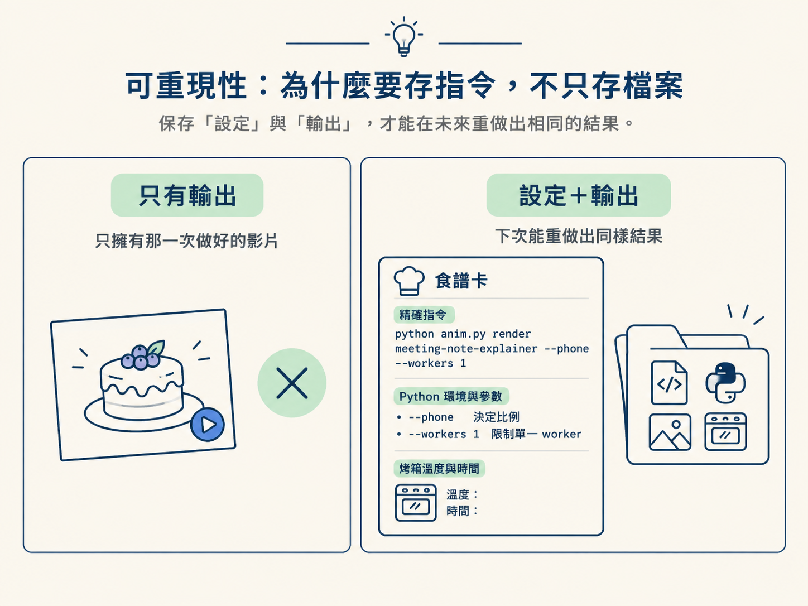
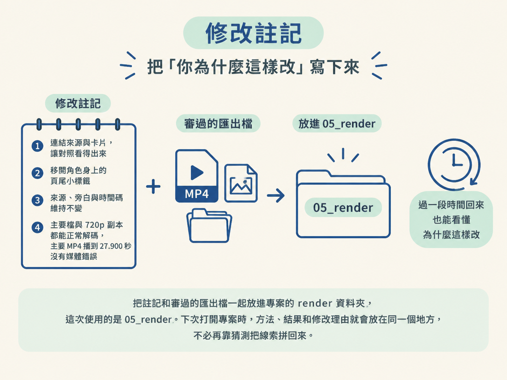
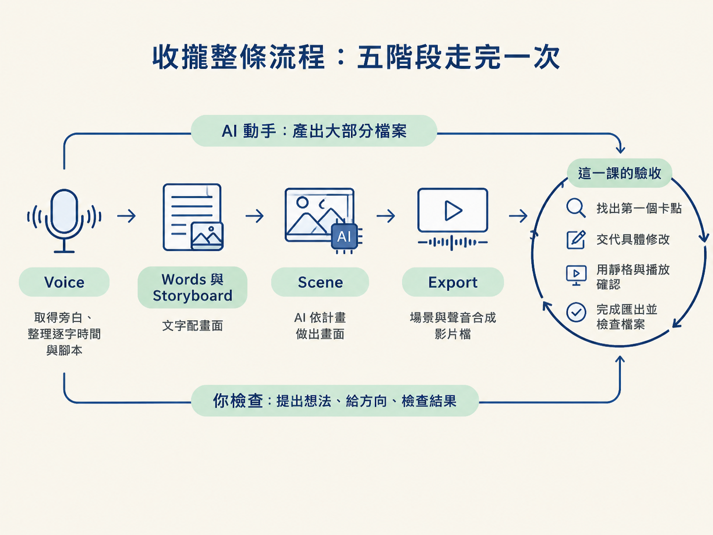

這是整條流程的最後一站。你會把能重現匯出的指令與資源設定保存下來，再把審過的影片檔和一行修改註記留在專案裡。完成後，你也能說清楚五個階段各自是誰動手、你要檢查什麼。
上一課結束時，你手上有一個播得出來的 MP4。可是，如果只留下影片，沒有留下「它是怎麼做出來的」，下一次遇到相同任務時，你可能又得重新摸索指令、重新猜設定，甚至再踩一次已經踩過的坑。
成品像是蛋糕，值得保存；但真正方便你下次再做一個的，是食譜。這一課要留下的，就是那份能重複產出成品的「食譜」：精確的指令、相關設定，以及一份簡短的修改註記。接著，我們會回頭收攏整條五階段流程，看看這一輪到底做了什麼。
這一步接在影片修正與匯出之後。你要帶進來的是已經審過的畫面、聲音與匯出設定；要留下的則是可重跑的指令、完整輸出、審過的影片檔，以及說明修改理由的註記。
AI 會依照專案中的設定執行匯出、保存指令與輸出；你要檢查的是三件事：指令是否真的能重現、影片是否能正常播放，以及修改理由是否已經寫清楚。驗收的重點不是「資料夾裡有檔案」而已，而是下次有人打開專案時，能不能沿著留下來的線索再做出同樣的結果。
匯出不是「按一下就好」的黑盒子。它牽涉到誰來執行、使用哪個 Python 環境，以及帶入哪些參數。只要其中一項不同，最後的結果就可能不一樣。
所以，要把「設定」和「輸出」放在一起保存。只有輸出檔，你擁有的只是那一次做好的影片；保存設定後，你才有機會在之後重新執行，得到同樣的結果。這就像只留下成品照片，和連同食譜、烤箱溫度與時間一起留下，兩者的可重現程度完全不同。

如果使用的是預備好的套件，render 指令本來就跟著專案走。這時可以請 AI 照著專案裡的指令執行，並把實際用過的那一行記下來。如果是自己從零建立的環境，AI 則必須先證明這條指令確實能產出可播放的檔案，再把它保存。
這次示範使用的指令是 python anim.py render meeting-note-explainer --phone --workers 1，完整的指令與輸出會存到 learner-workspace/evidence/18-render.txt。其中，--phone 決定輸出的比例，--workers 1 則限制使用單一 worker。它們不是可有可無的小配件，而是會影響結果的設定，因此也要和指令本身一起留下。
只存指令還不夠。指令說明的是「怎麼做」，卻不會自動告訴未來的你「為什麼要這樣做」。過一段時間回來看，你也許還記得畫面長什麼樣，卻想不起來當初為什麼要調整那兩個地方。
修改註記就是替成品補上一段記憶。它不需要寫成長篇報告，只要讓未來的你或合作夥伴一眼看懂這次調整的理由，以及影片是否通過檢查即可：
把這份註記和審過的匯出檔一起放進專案的 render 資料夾；這次使用的是 05_render。如此一來，下次打開專案時，方法、結果和修改理由就會放在同一個地方，不必再靠猜測把線索拼回來。

回頭看這一輪，你其實已經把同一條管線完整走過一次。它由五個階段組成，而且順序固定。
第一階段是 Voice（旁白）：先取得旁白，將它整理成逐字時間與腳本。第二階段是 Words 與 Storyboard（文字與分鏡）：把每句話配上適合的畫面。第三階段是 Scene（場景）：讓 AI 依照計畫把畫面做出來。最後進入 Export（匯出），把場景與聲音合成一個影片檔。
每個階段的分工其實都很一致：AI 負責大部分檔案的產出，你負責提出想法、給出方向，並檢查結果。到了這一課，你做的事情可以濃縮成一個完整的驗收循環：找出第一個卡點，交代具體修改，用靜格與播放確認修改有效，最後完成匯出並檢查檔案。
這不是配角的工作。沒有人的檢查，一個「技術上能跑」的檔案，可能仍然是一支「別人看不懂」的影片；也沒有人的方向，AI 就不知道該把哪個問題優先修好。

如果這個分工聽起來很熟，是因為它正是整門課一直建立的框架：AI 動手，你檢查。前面幾個節點分別示範了這個框架怎麼運作；這一課則讓它第一次在一個你真正關心的成品上完整跑完一圈。
從這裡開始，重點不只是「會不會用某個工具」，而是你能不能把一個想法，透過這條管線變成別人看得懂的東西；也能不能把指令、設定和判斷理由一起留下，讓這個結果下次還做得出來。
把指令、設定和一行修改註記跟成品一起留下來，你保存的就不只是檔案，而是能重複產出它的方法。當你連「為什麼這樣改」都記下來，這條五階段管線才算真的被你掌握。
第一支影片到這裡就完成了。下一課會保留這個範例專案，另開一個新資料夾，把你自己的題目放進同一條管線，再走一遍。